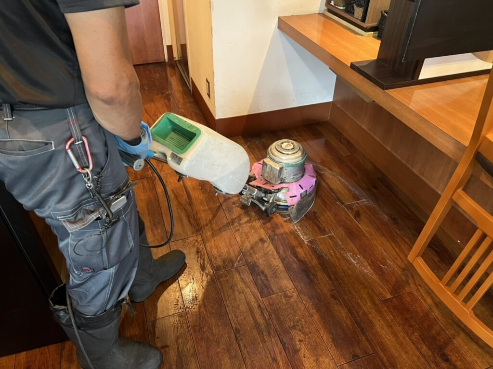
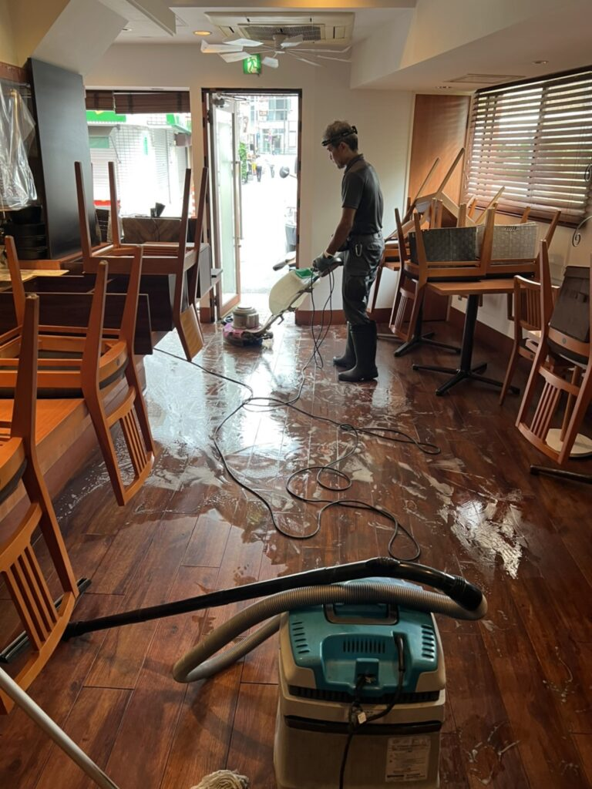
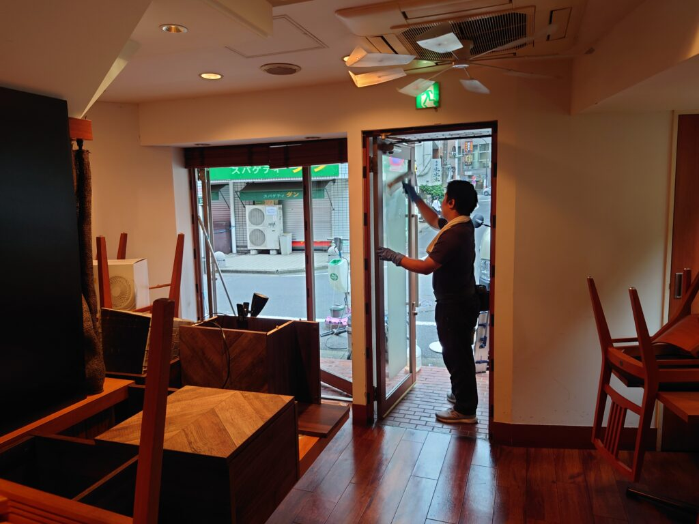
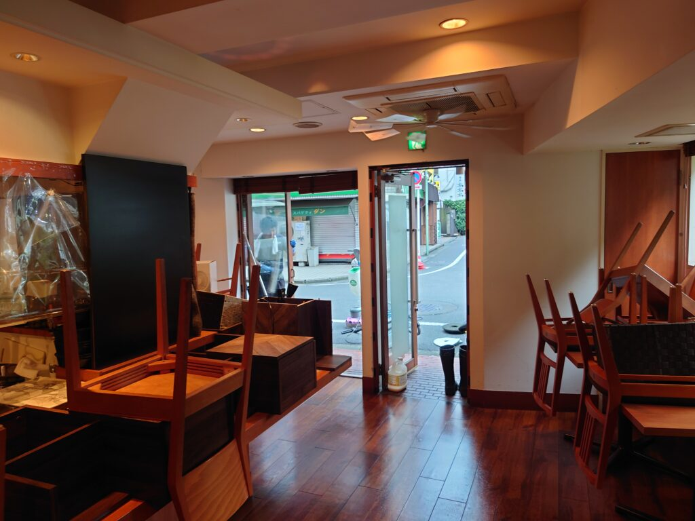

目黒駅前 おしゃれなフランス料理店の床面ワックスクリーニングをしました!
目黒駅から歩いて1分にある、天然木のフローリングがとても美しいフランス料理店の床面クリーニングをしました。毎年DAIZENでこのフランス料理店さんの床面ワックス仕上げをしておりまして、天然木フローリングの汚れが落ちると、うっとりするほど美しい木の輝きが現れます、この美しい木のフローリングにワックスを掛ける仕事は大変な楽しみです!汚れがみるみる落ちて美しい木のフローリングが今回も現れました!




飲食店様のクリーニング全般において共通するニーズと必要な技法をお伝えします。まず油汚れ、テーブルの下面、椅子の下面、床面の隅々の埃汚れと油脂汚れが結合して粘土状の堆積汚れが出来ている点が共通で、これら油脂汚れの堆積はなかなか普段のお掃除では除去出来ないレベルの場合が間違いなく多いです。従って床面機械洗浄クリーニングニーズおいても、油脂汚れ、堆積汚れ除去の適切な専用薬剤をDAIZENクリーニングメソッドの中から数種類ピックアップして効果測定を実施しながら的確に除去していきます。専用薬剤のみならず機械洗浄パッド類も数種類のラインナップの中から、段階的に除去に最適な専用ㇵを効果測定を実施しながらチョイスしていきます。壁面の油脂汚れ、埃汚れ、天井部分、照明器具、それぞれも同様に油脂汚れと埃汚れが堆積しておりますので、適宜適切な専用薬剤を効果測定を実施しながらチョイスして、的確にクリーンナップしていきます。こちらフランス料理店様の場合は、特に美しい天然床材フローリングですので、より美しい輝き、光沢が蘇るように多様な工夫を施していきます、使用するワックスも最高級で美しく輝きを放つタイプを採用し、細心の注意をしながら丁寧に仕上げていきます。ぜひDAIZENクリーニングメソッドを駆使した店舗クリーニングをお試し下さい。宜しくお願い致します。